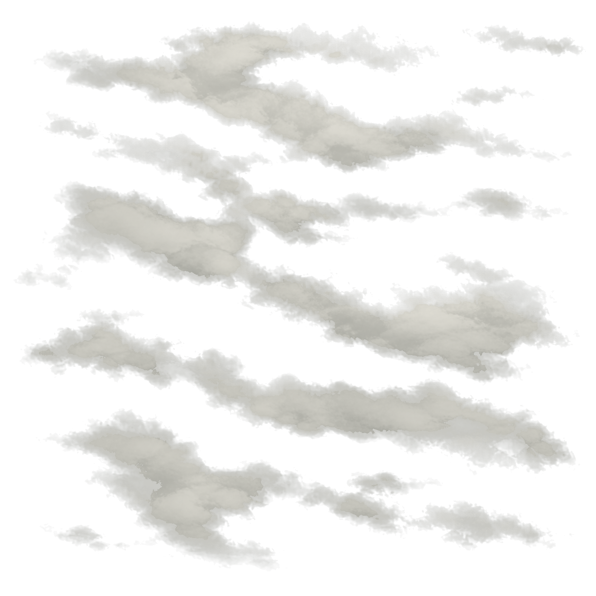
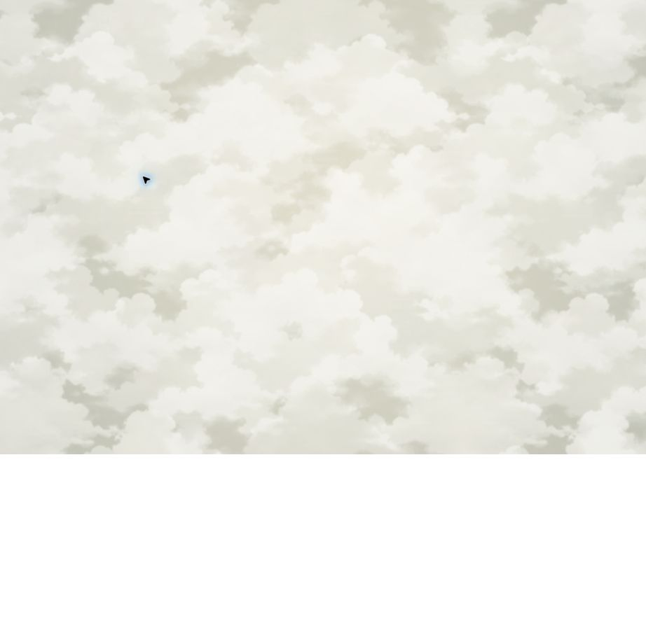
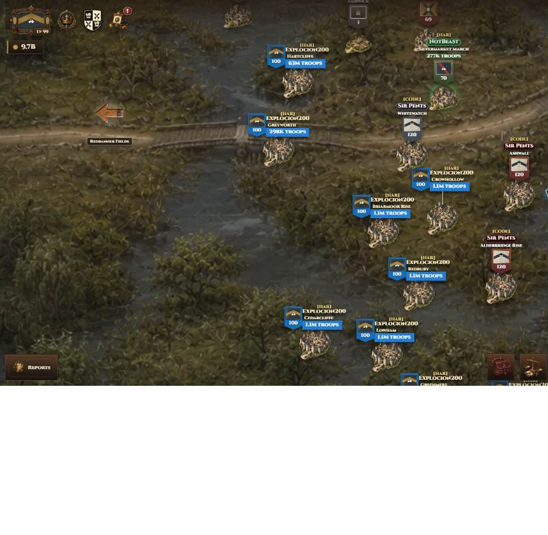
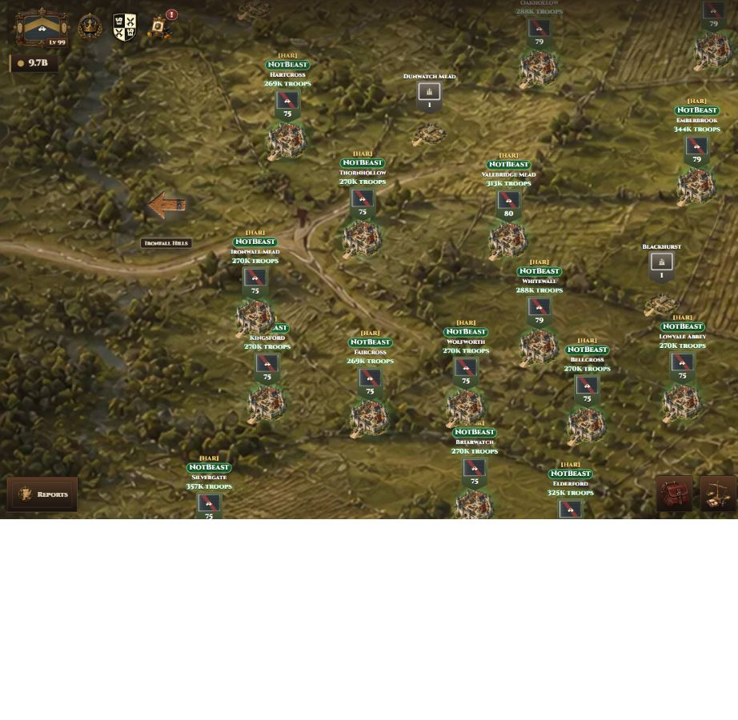
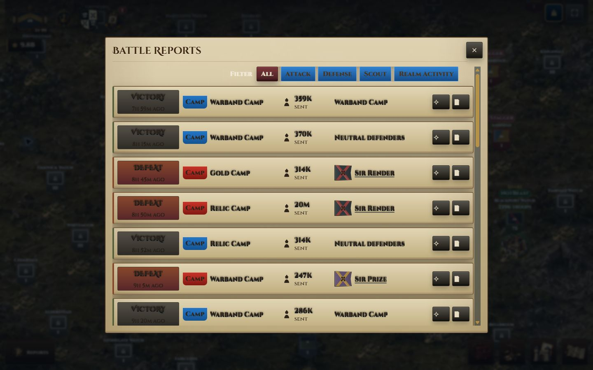

Pass 4A mist

Exact map, transition, and selected HUD rollback with targeted readability and interaction polish. Development-only; excluded from production.
Left: rejected Pass 4A repaint retained only for comparison. Right: exact restored pre-Pass-4A production source.



The hit target remains 92x92. The visible marker uses a tight #D8C7A1/#CBB78F halo instead of the former blue 9px/16px bloom.


